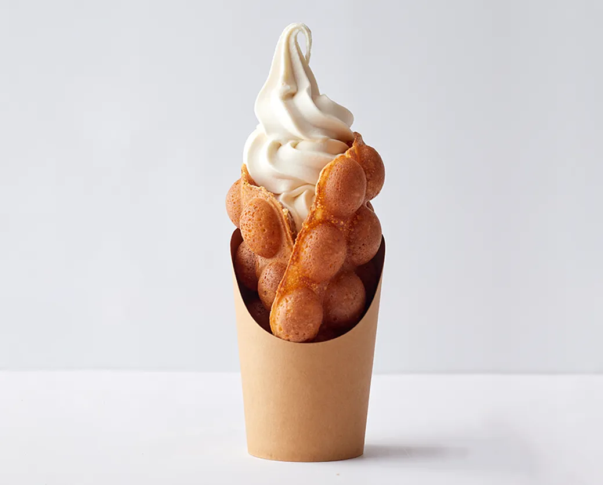
看板メニュー
ワッフル純豆乳ソフトクリーム
フル ¥900 / ハーフ ¥690 （税込）
ソフトクリームとバブルワッフルを組み合わせた看板メニュー。新潟県産米粉100%のサクサクもちもちの生地で、濃厚でなめらかな、朝しぼり豆乳のソフトクリームを包みました。和のトッピング5種（抹茶・きな粉・ほうじ茶・チョコソース・黒蜜）は、トレーに入れて無料でお付けします。ふんわりした豆乳ホイップクリームに変更することもできます。
毎日 11:00〜22:00 営業
福岡・薬院 · 地下鉄薬院大通駅 2番出口から徒歩2〜3分
新潟県産米粉の焼きたてバブルワッフル、朝しぼり豆乳でつくる純豆乳ソフトクリーム、焼きドーナツ、米粉ジェラート。小麦、乳、卵、白砂糖は使用していません。
Googleマップ評価 4.7（口コミ250件以上）· HappyCowにも掲載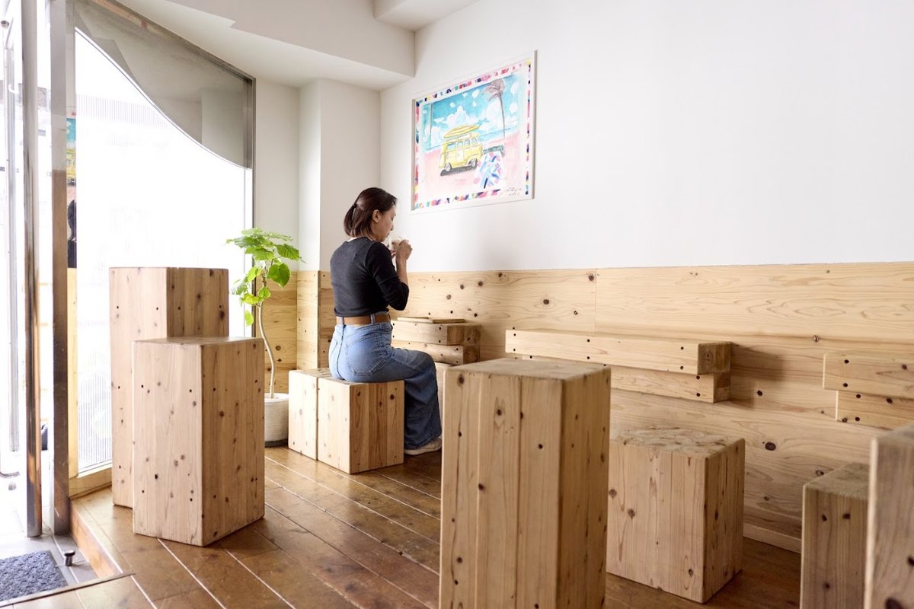
店内のご紹介
薬院にある、あたたかな雰囲気のスイーツ店です。ご注文を受けてから焼き上げる米粉のバブルワッフルを、木の席で焼きたてのままどうぞ。焼きドーナツは、ボックスに詰めてお持ち帰りいただけます。
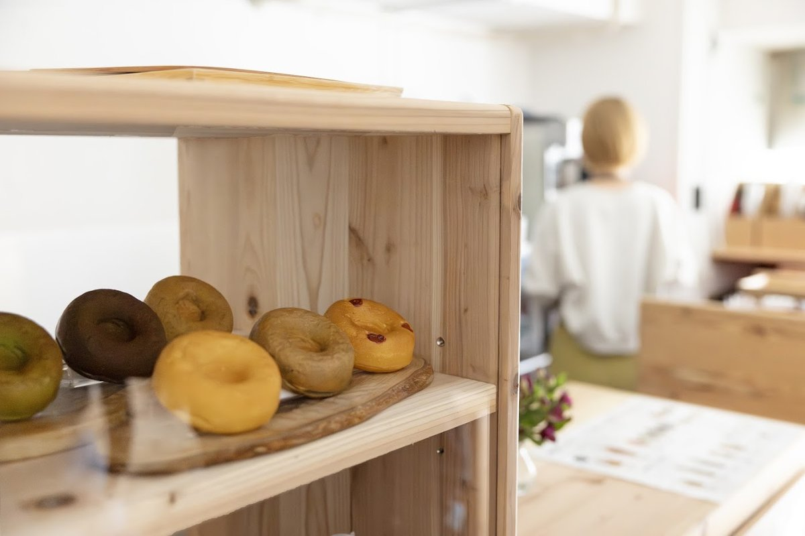
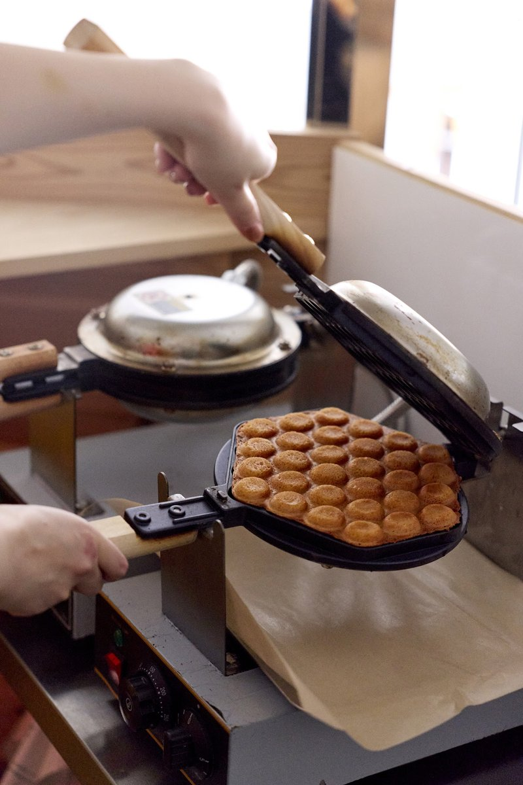
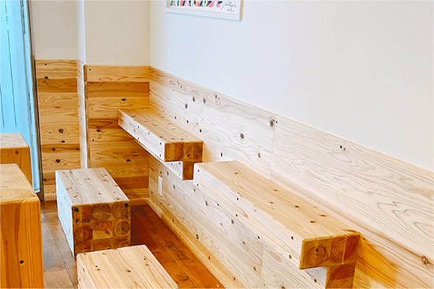
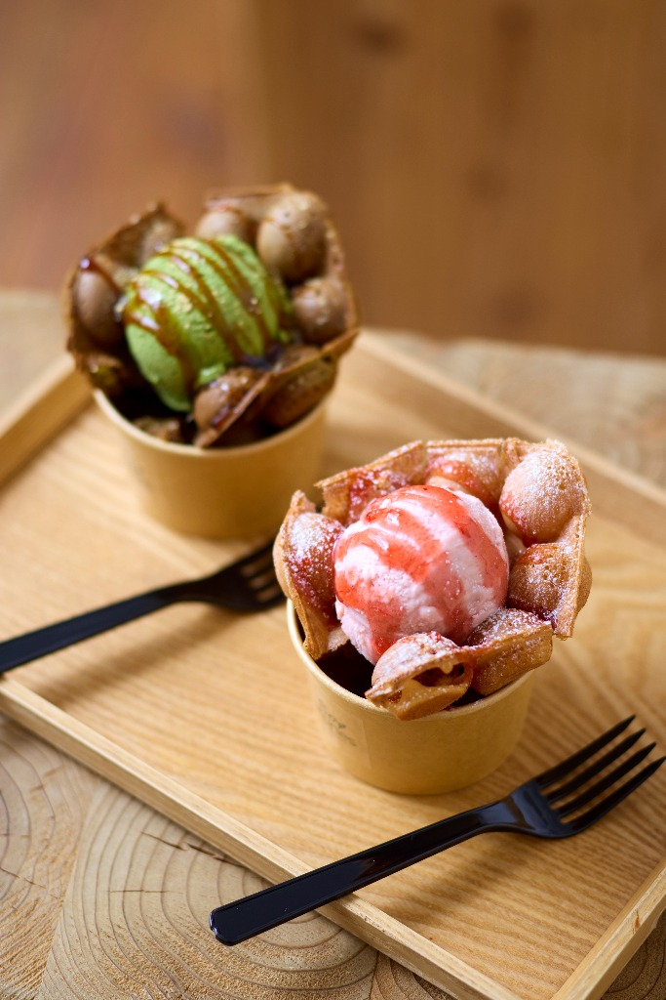
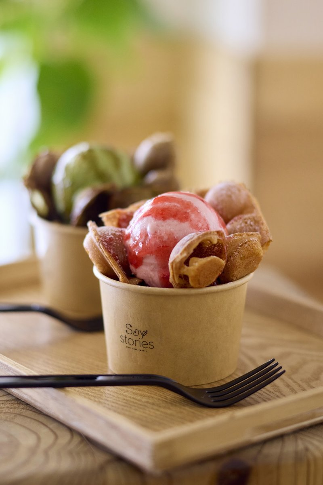
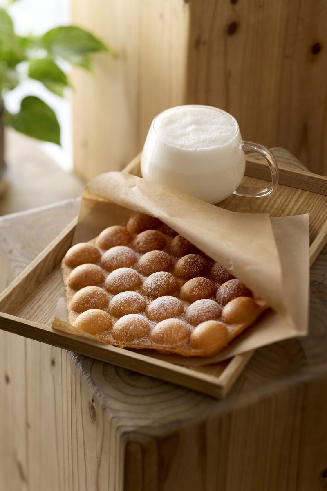
原材料とアレルギー対応
小麦・乳・卵を使わない厨房のルール
SoyStoriesのすべての商品は100%植物性（ヴィーガン）でグルテンフリーです。小麦、乳、卵、そしてはちみつやゼラチンなどの動物由来の原材料は、厨房に持ち込みません（小麦は、スタッフ個人の食事も含みます）。白砂糖も使用していません（てんさい糖や植物由来の甘味料で、やさしく甘みをつけています）。
避けたい原材料で絞り込む：
上の原材料を選ぶと、定番メニューを絞り込めます。
季節商品やドリンクには、オレンジやカシューペーストなど、ほかの原材料を使う場合があります。ご注文の前にスタッフへお尋ねください。FoodHugのアレルギー情報ページを見る →
季節限定
定番メニューのほかに、季節限定のパフェ、バブルワッフルのカップ、ホット／アイスのドリンクもご用意しています。
今の季節限定メニューはInstagramで · @soystories_yakuin →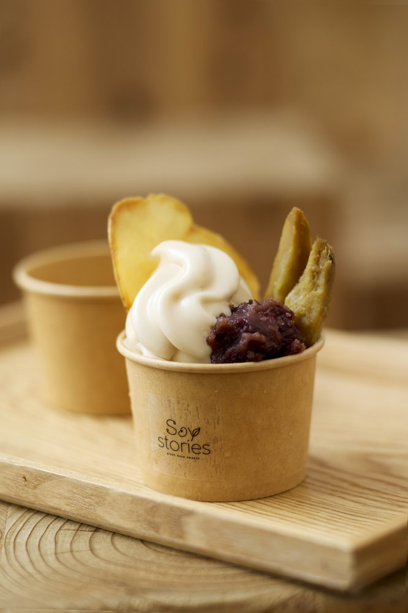
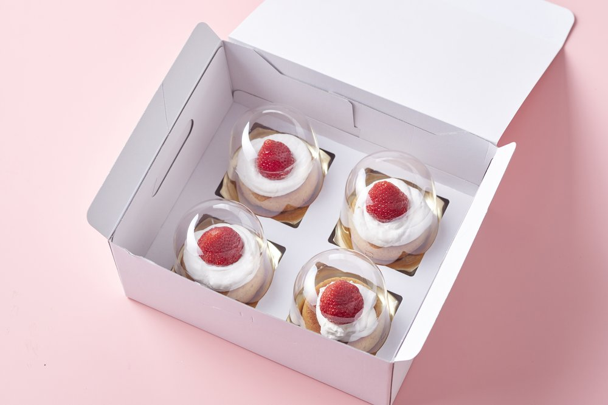
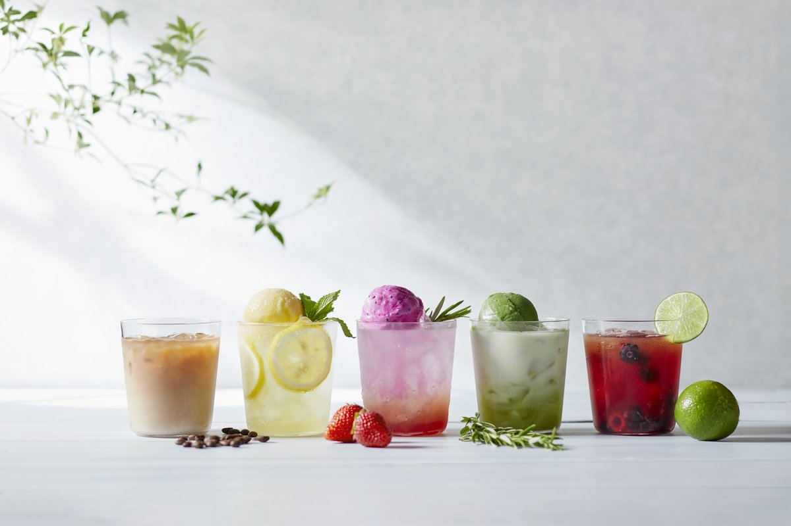
テイクアウト・お土産
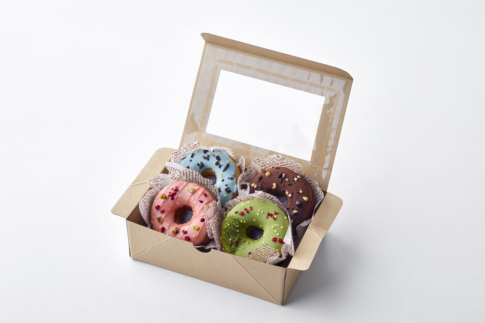
常温で約1週間保存できます
アーモンドと米粉でつくるしっとりしたケーキドーナツ（1個430円・大豆不使用）は、常温で約1週間保存できます。旅行先のホテルや新幹線、飛行機での移動にも持ち運びやすく、お土産にもおすすめです。
「セリアック病の私は、そうではない夫と息子と一緒に訪れました。バブルワッフルも、ソイアイスも、ドーナツも、家族みんな大満足！乳製品不使用だと知らなければ気づかないほどクリーミーで、フレーバーも抜群でした。タクシーで来る価値は間違いなくあります！」
「ワッフルと純豆乳ソフトクリームが特においしく、温かさとクリーミーさのバランスが絶妙です。英語のメニューがあるので注文もとても簡単で、スタッフの皆さんも本当に丁寧で親切でした！」
「欧米でよくある、味気ない大豆風味のアイスクリームとはまったく別物です。このお店は別格！注文ごとに焼くサクサクのワッフルに、自由に試せる無料のトッピングのトレーも付いてきて、天国にいる気分でした。」
「このメニューの中に、おいしくないものがあるなら見つけてみて、と言いたいくらい！SoyStoriesのおかげで、アレルギーや食事制限のある人も甘いものを楽しめます。遅めの夕食のあとにヴィーガンのデザートを食べられて、本当にうれしかったです。」
「ワッフルはとてもサクサクで、甘すぎません。私のお気に入りは、抹茶アイスと、自分で選べるトッピングのトレー（黒糖シロップがおすすめ！）。レモンのドーナツも食べましたが、アーモンドプードルの生地でしっとりしていて、おいしかったです。」
「アイスが豆乳でできているなんて、まったくわかりません。とてもおいしくて、ワッフルも絶品です。滞在中に、抹茶アイスをのせたワッフルを2回も食べてしまいました。やめられませんでした！オーナーさんはとてもフレンドリーで、穏やかな雰囲気のお店です。」
「私は豆乳ホイップのワッフル、パートナーはラージサイズのソフトクリームのワッフルを注文しました。トッピングと英語のメニューも持ってきてくれました。もう一度来店して、ホテル用にケーキドーナツを買いました。お手頃な価格で、素敵なスタッフさんです！」
「私はグルテンフリーでもヴィーガンでもありませんが、いただいたデザートはどれも本当においしかったです。両親と3人で、黒ごま、いちご、チョコのバブルワッフルを食べました。どれも風味豊かでクリーミー。どなたにもおすすめです！」
「このアイス、本当に本当においしい！私たちはアメリカ出身でヴィーガン歴13年ですが、正直、この抹茶アイスはこれまで食べたヴィーガンアイスの中で一番かもしれません。帰国したら、このお店を夢に見そうです。」
「ここのケーキドーナツは、ヴィーガンかどうかに関係なく、これまでの人生で食べた中で一番おいしいドーナツです。ほどよくずっしり、しっとりしていて、甘さもちょうどいい。」
GoogleマップとHappyCowに投稿された旅行者の口コミから抜粋し、日本語に訳したものです（原文は英語）。個人の感想です。アレルギーのある方は、必ず商品ごとの原材料をご確認ください。
当店のこだわり
私たちソイストーリーズのミッションは、アレルギーやヴィーガンなど、食に制限がある方、素材にこだわる方にとって「ユメミタイ」と思える場所をつくること。みんなで一緒に食べられる幸せ。それをカタチにするため、私たちは日々、お店に立っています。
当店では全商品グルテンフリー＆100%植物性素材のSOYスイーツを提供しています。小麦、乳、卵、白砂糖を使用せず、安心してお召し上がりいただける商品づくりを目指しています。
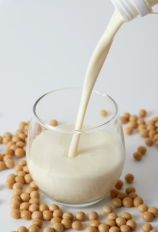
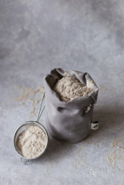
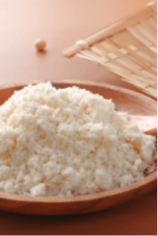
よくあるご質問
はい。SoyStories 薬院店のスイーツとドリンクは、すべて100%植物性（ヴィーガン）です。肉、魚、乳、卵、はちみつ、ゼラチンは、どの商品にも使用していません。
当店の商品はすべて、グルテンフリーの米粉またはアーモンドプードルでつくっており、小麦、乳、卵は厨房に持ち込みません（小麦は、スタッフ個人の食事も含みます）。ただし、同じ厨房で大豆、アーモンド、ごま、やまいも、りんご、もも、オレンジを取り扱っているため（また、ヴィーガンティラミスなど一部の季節商品・宅配商品にはカシューナッツを使う場合があります）、微量のアレルゲンの混入を完全になくすことはできません。重度のアレルギーやセリアック病の方は、商品ごとの原材料をご確認のうえ、ご注文の前にスタッフへご相談ください。
このページのアレルギー絞り込みと全26品のメニュー表、またはFoodHugのアレルギー情報ページでご確認いただけます。カウンターのスタッフにお尋ねいただくこともできます。
商品によって異なります。
• 大豆：バブルワッフル、ソフトクリーム、豆乳ホイップ、プレーンドーナツ、ジェラート4種類に使っています。大豆不使用なのは、ケーキドーナツ6種類（430円）と、フルーツ味のジェラート4種類（ベリーミックス、ジューシードラゴンフルーツ、爽やかりんご、ジューシーすぎるもも）です。
• アーモンド（ナッツ類）：ケーキドーナツ（430円）と、ジェラートのとろけるショコラに使っています。（注：ヴィーガンティラミスなど一部の季節商品・宅配商品には、カシューペーストを使う場合があります。）
• ごま：黒ゴマのバブルワッフルと、黒ごまのプレーンドーナツに使っています。
• やまいも：もちもちの食感を出すために、プレーンドーナツ6種類（330円）に使っています。
白砂糖は使用していません。商品に応じて、てんさい糖、オーガニックのアガベやメープル、天然の植物由来の甘味料でやさしく甘みをつけています。白砂糖を使用していないという意味で、糖分ゼロ（シュガーフリー）という意味ではありませんのでご注意ください。
毎日11:00〜22:00の営業で、ラストオーダーは21:45です。定休日はありません。営業時間の臨時変更や特別な休業日は、Instagram（@soystories_yakuin）でお知らせします。
バブルワッフルとソフトクリームは、ラストオーダー（21:45）まで、ご注文のたびにおつくりします。ドーナツやジェラートの一部の味は、夜遅い時間に売り切れることがあります。特定の味やギフトボックスをご希望の場合は、Instagram（@soystories_yakuin）のDMでご連絡ください。
店内はコンパクトで、メイン席が4席、ほかに木のキューブスツールがあります。ベビーカーやスーツケースも店内にお持ち込みいただけます。お一人様あたりの最低注文はなく、シェアも歓迎です。
• バブルワッフル＆ソフトクリーム：テイクアウトもできますが、温かいバブルワッフルでソフトクリームがすぐに溶けてしまうため、イートインか店のすぐ外で、すぐにお召し上がりいただくことを強くおすすめします。
• ケーキドーナツ（430円）：常温で約1週間保存できます。ホテルでのおやつや新幹線の中、お土産にいちばんおすすめです。
• プレーンドーナツ（330円）：急速冷凍（または店内で温めて）お渡しします。常温で持ち歩くと自然解凍されますので、冷蔵で保管して3日以内にお召し上がりください。
• カップの米粉ジェラート（490円）：冷凍でお渡しします。保冷剤入りの保冷バッグもご用意しています（4点以上のご購入で無料）。
焼きたてのおいしさそのままに急速冷凍したドーナツを販売しています。その場で食べたい場合は、店内で温めてご提供しますので、スタッフにお声がけください。ホテルやご自宅へ持ち帰る場合は、電子レンジ（600W）で1分ほど温めてお召し上がりください（自然解凍後に軽くトーストしても）。焼きたてのような、もちもちの食感になります。
現金、主要なクレジットカード（Visa、Mastercard、JCB、American Express、Diners Club）、交通系ICカード（Suica、PASMO、ICOCA、SUGOCA、nimoca、はやかけん）、iD、QUICPay、PayPayをご利用いただけます。メニューの価格はすべて税込です。
福岡市地下鉄七隈線の薬院大通駅で降りて、2番出口から薬院六つ角方面へ徒歩2〜3分（約160m）です。天神南駅からは地下鉄で約4分、博多駅からは約9分です。ソフトクリームの光る看板が目印の、1階のお店をお探しください。
カウンターに、英語の紙のメニューをご用意しています。英語ページでは、各商品の「Show staff」ボタンを押すと、日本語の注文画面（店内／テイクアウトの切り替え付き）がスマートフォンに表示されます。
駐車場はございません。お近くのパーキングをご利用ください。
アクセス
Instagram @soystories_yakuin のDMでご連絡ください。お問い合わせ・最新情報は、LINEでも受け付けています。
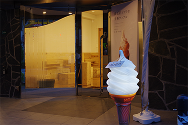
入口の目印：レンガ造りのマンション（チサンマンション第3博多）の1階。通り沿いで光る白いソフトクリームの看板が目印です。
タクシーでお越しの方は、運転手さんにこの画面をお見せください
〒810-0022
福岡市中央区薬院2丁目2-24
チサンマンション第3博多 1階
SoyStories 薬院店（地下鉄七隈線「薬院大通駅」2番出口から薬院六つ角方面へ徒歩約2〜3分）
ご利用いただけるお支払い方法